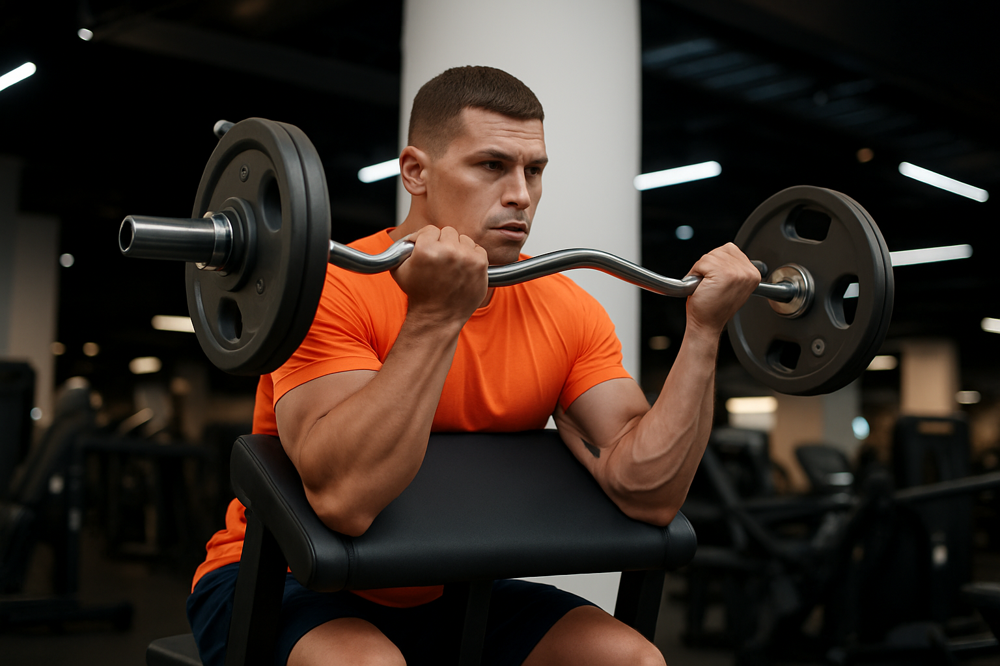
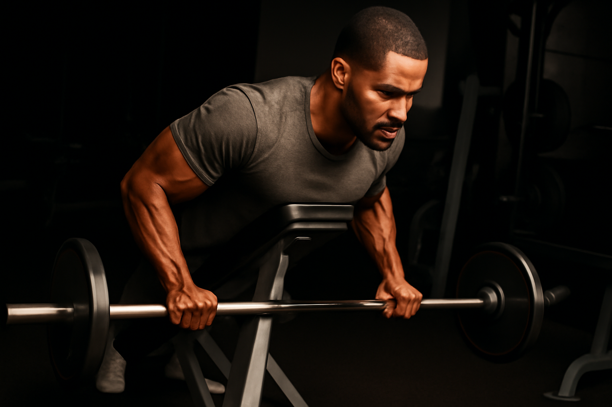
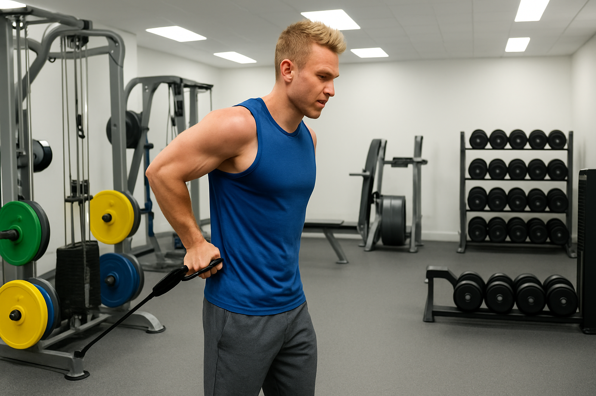

Curl de bicep
Si buscas un ejercicio compuesto, clave para tus biceps, este es el indicado.
Aqui podras encontrar diferentes formas de hacer este ejercicio.
Curl de Bicep Predicador
Ejercicio de gimnasio increible, con gran estimulo en el bicep, incluso para principiantes.
Aqui podras encontrar como debes hacer este ejercicio.
Curl de Bicep Martillo
Enfocando de forma unica el bicep branquial, imprescindible.
Aqui podras encontrar como debes hacer este ejercicio.
Curl de bicep Araña
Ejercicio bastante unico, con un estimulo importante.
Aqui podras encontrar como debes hacer este ejercicio.
Curl de Bicep Bayezian
Ejercicio interesante para la hipertrofia y crecimiento de tus biceps.
Aqui podras encontrar como debes hacer este ejercicio.
Chin-Ups
Un ejercicio que nunca imaginaste que haria tus biceps mutar.
Aqui podras encontrar como debes hacer este ejercicio.